для одного мастера
ПОЧАСОВОЙ
150–250 ₽
В зависимости от используемого оборудования:
200 (150)* руб/час — только ручной инструмент
220 (170)* руб/час — ручной и электроинструмент
250 (200)* руб/час — включая работу на станках
Аренда верстака в мастерской и полки в камере хранения материалов и заготовок. Доступ к станкам и инструментам. Платное обучение столярному делу, бесплатные советы и посильная помощь от наших мастеров.
* - при внесении депозита от 1500 рублей. Депозит действует в течение 1 месяца с момента оплаты.
 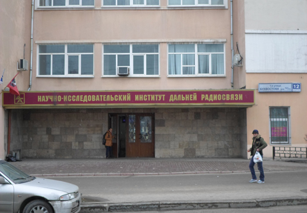
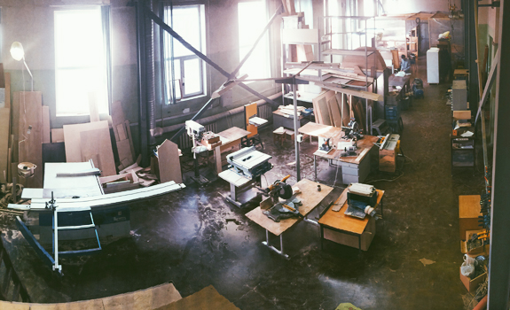
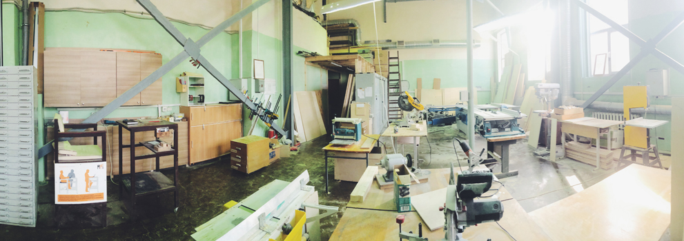
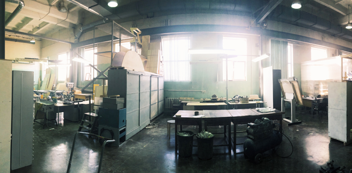
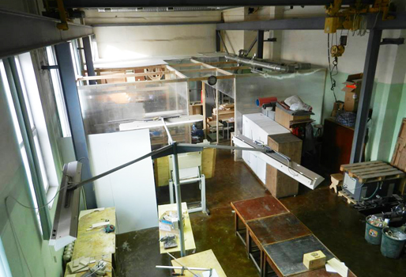
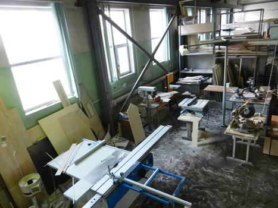
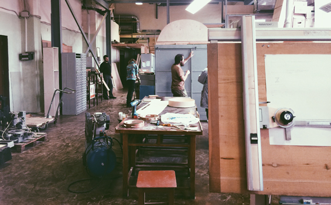
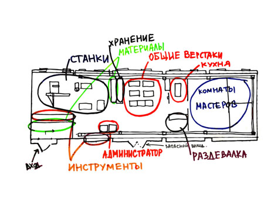
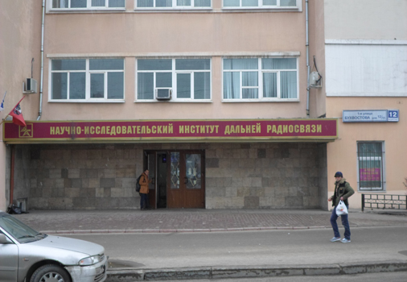
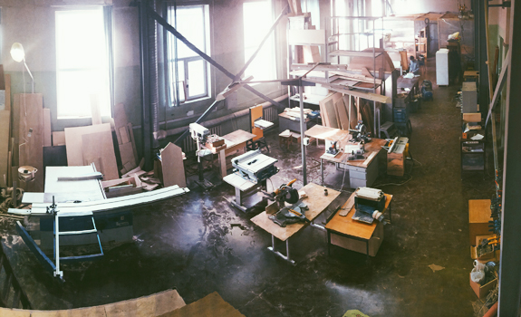
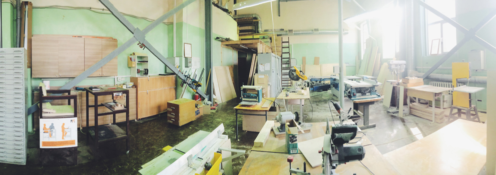
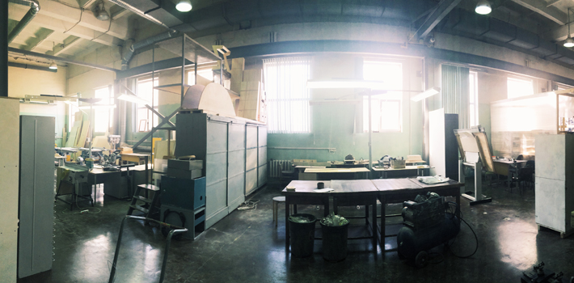
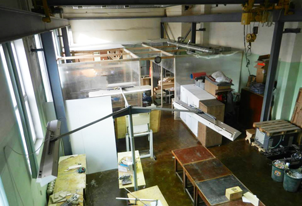
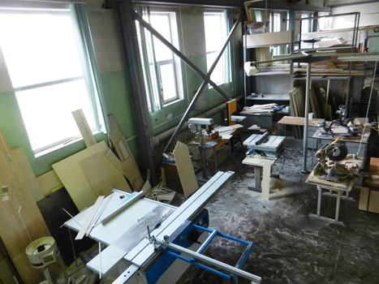
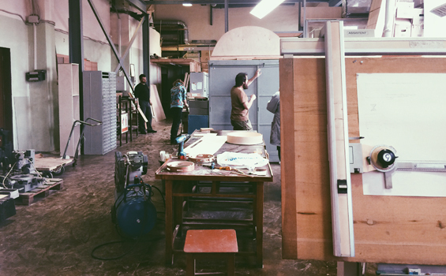
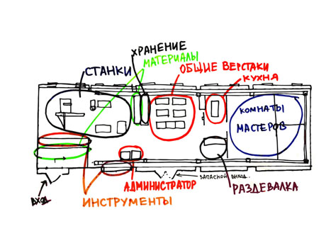